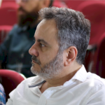

Mauricio B. Almeida
Basic information

- Full professor at the Federal University of Minas Gerais
- Information Science, PhD
- Researcher funded by the Brazilian National Council of Scientific Development (CNPq)
- Open Researcher and Contributor ID (ORCID): 0000-0002-4711-270X
- Contact: mba at eci ufmg br, https://mba.eci.ufmg.br (in Portuguese)
Affiliation
Federal University of Minas Gerais (UFMG)
Av. Antonio Carlos, 6627, Pampulha, Belo Horizonte
Minas Gerais - Brazil, ZIP 31.270-901
School of Information Science, room 4007, phone: +55 (31) 3409-6107
Research
google scholar ♦ research gate ♦ academia ♦ dblp ♦ linkedin ♦ curriculum vitae
To cite a few, I develop models that computers use to deal with representations in the world about things that people handle in their daily lives, such as trees, bacteria, cars, institutions, books, lotteries, governments, other people, and their professions. These models, called “ontologies,” provide computers with schemas and make them capable of supporting logical inferences, that is, automatic reasoning.
I am a Full Professor in the Department of Theory and Information Management at the Federal University of Minas Gerais. I also worked for five years in the Institute of Computer Science at the Catholic University of Minas Gerais (in Portuguese). I acquired my Ph.D. in Information Science at UFMG. Also, I obtained a Master’s degree in Information Science, a graduate certificate in Software Engineering, and a graduate certificate in Business Administration after my Engineering major.
I spent a sabbatical at the State University of New York at Buffalo with the Ontology Research Group team Dr. Barry Smith led. The project developed during this period regards a vocabulary in the domain of human blood. I also was a Visiting Fellow at the University of Arkansas for Medical Science under the supervision of Dr. Mathias Brochhausen.
My main research interest is Knowledge Representation and applied ontology. Some other interests are classification systems, information systems modeling, and specialized vocabularies for information systems.
Selected Publications
- Almeida, M.B. (2023). BFO as a top-level ontology for information systems modeling. Tutorial at the 14th International Conference on Biomedical Ontologies 2023 (ICBO 2023).
- Machado, L.O.; Martínez-Ávila, D. Almeida, M.B.; BORGES, M.M. (2023). Towards a moderate realist foundation for ontological knowledge organization systems: The question of the naturalness of classifications. Journal of Information Science, pp. 1–18 DOI: 10.1177/01655515231160031.
- Souza, A. D.; Almeida, M.B. (2022). Definitions in Biomedical Ontologies: The Method ONTODEF. Journal of Biotechnology & Bioresearch, volume 3, issue 4. (short paper).
- Emigdyo, J.L; Almeida, M.B. (2021). Innovation in Information Technology for Biomedicine: Ontologies Applied to the Systems Interoperability. Journal of Biotechnology & Bioresearch. (short paper).
- Farinelli, F.; Almeida, M.B. (2022). Ontologies as knowledge representation strategy in Biomedicine. Biomed Research And Technology. Volume 15, issue 1. (short paper).
- Almeida, M.B.; Moreira, C. S. (2021). Toward an ontological representation for corporate financial documents and their components: an investigation on balance sheets and their accounts. Proceedings of the 2nd International Workshop on Ontology of Social, Legal and Economic Entities, Italy.
- Almeida, M.B; Emigdyo, J.L. (2021). Formal Top-level Ontologies Applied to the Integration of Biomedical Terminologies. (short paper). Journal of Biotechnology & Bioresearch 2(5). (JBB). 2021.
- Almeida, M.B; Felipe, E.R. (2021). The queries expansion on biomedical terminologies: toward a comparison of knowledge representation artifacts for information retrieval. (short paper). Trends in Technical & Scientific Research (TTSR). 5(1). DOI:10.19080/TTSR.2021.05.555654.
- Smith et al. (2020). BFO 2.0 – BFO 2020 – Detailed Comparison – Report. Ontology Research Group.
- Pinto, J.A.; Almeida, M.B. (2020). An Applied Ontology-Oriented Study Case to distinguish Public and Private Institutions through their documents. Knowl. Org. 47, No.7.
- Machado, L.M.O.; Almeida, M.B.; Souza, R.R. (2020). What researchers are currently saying about ontologies: a review on recent Web of Science articles. Knowl. Org, v.47 No.3.
- Almeida, M.B.; Ribeiro, E.F.; Maculan, B.C. (2019). Ontologies and Classification: The Unavoidable Interplay Between Human Reasoning and Machine Reasoning. Proceedings of the QQML 2019: 11th Qualitative and Quantitative Methods in Lib. Int. Conf., Florence, Italy.
- Almeida, M.B.; Ribeiro, E.F.; Barcelos, R. (2019). Toward a Document-Centered Ontological Theory for Information Architecture in Corporations. Forthcoming. Journal of the Association for Information Science and Technology.
- Simões, M.G.; Machado, L.; Souza, R.R.; Lopes, A.T.; Almeida, M.B. (2018). Automatic indexing and ontologies: the consistency of research chronology and authoring in the context of Information Science. In: Proceedings of the Fifteenth International ISKO Conference, Porto, PT.
- Almeida, M.B.; Pessanha, C.; Barcelos, R. (2017). Information architecture for organizations: a social ontology approach. In: Ontology in Information Science. Thomas, C. (Ed.). ISBN 978-953-51-5354-2.
- Almeida, M.B.; Farinelli, F. (2017). Ontologies for Representation of Electronic Medical Records: the Obstetric and Neonatal Ontology. Journal of the Association for Information Science and Technology. DOI: 10.1002/asi.23900.
- Almeida, M.B.; Brochahausen, M.; Silva, F.B. (2017). An ontological approach to the normative dimension of organizations: an application of Documents Acts Ontology.Ciência da Informação, v.46, n.1.
- Farinelli, F.; Almeida, M.B.; Elkin, P.; Smith, B. (2016). Interoperability Among Prenatal EHRs: A Formal Ontology Approach. (poster). Proceedings of the American Medical Informatics Association (AMIA) Symposium, Chicago, U.S.
- Farinelli, F.; Almeida, M.B. (2016). OntONeo: The Obstetric and Neonatal Ontology. Proceedings of the International Conference of Biomedical Ontologies, Corvallis, U.S.
- Coelho, K. C.; Aveiro, D. S.; Almeida, M. B. (2016). Towards a formal account to dealing with documents within the DEMO method. Proceedings of the 6th Enterprise Engineering Working Conference (EEWC), Funchal, Portugal.
- Mendonça, F. M.; Almeida, M. B. (2016). OntoforInfoScience: a detailed methodology for the construction of ontologies and their application in the blood domain. Brazilian Journal of Information Science: Research Trends, vol.10, no.1, São Paulo, Brazil.
- Almeida, M.B.; Souza, R.; Baracho, R. M. A. (2015). Looking for the identity of Information Science in the age of big data, computing clouds, and social networks. Proceedings of the 4th International Symposium of Information Science (ISI), Croatia.
- Mendonça, F. M.; Almeida, M. B.; Soares, A. L.; Sousa, C. P. (2015). From a consensual conceptual level to a formal ontological level: a case study in healthcare organizations. Proceedings of the 9th International Conference on Advances in Semantic Processing (SEMAPRO), France.
- Baracho, R. M. A.; Branquinho, L.; Almeida, M.B.; Souza, R.R. (2015). Using Ontologies and Inference Engines in Association Rules of Data Mining: Application in Sales Strategies in Medical Laboratory Diagnostic Market. Proceedings of the19th World Multiconference on Systemics, Cybernetics, and Informatics (WMSCI 2015), Orlando, United States.
- Almeida, M. B..; Baracho, R. M. A. (2014). A Theoretical Investigation About The Notion Of Parts And Wholes: Mereological And Meronymic Relations. Brazilian Journal of Information Science: Research Trends, vol.8 n.1/2.
- Almeida, M. B. (2013). Revisiting Ontologies: a necessary clarification. Journal of the American Society of Information Science and Technology. v. 64, n. 8. p. 1682–1693. DOI: 10.1002/asi.22861.
- Bax, M. P., Almeida, M.B., Wassermann, R. (2013): Ontology Research in Brazil. Proceedings of 6th Seminar on Ontology Research in Brazil (ONTROBRÁS), Belo Horizonte, Brazil, Sep. 23-25. CEUR-WS.org, online CEUR-WS.org/Vol-1041.
- Brochhaussen, M. B.; Almeida, M. B.; Slaughter, L. (2013). Towards a Formal Representation of Document Acts and the Resulting Legal Entities. In: Ingthorsson, R. D., Svennerlind, C., and Almäng J. (Ed.). Johanssonian Investigations. Ontos: Frankfurt, 120-139, 2013. ISBN 978-3-86838-190-0.
- Almeida, M.B.; Souza, R. R. (2012). Documents in Knowledge Management Support: a Case Study in a Healthcare Organization. Knowledge Management / Book 2. ISBN. 979-953-307-571-5. University of Taiwan, China.
- Souza, R. R.; Tudhope, S.; Almeida, M. B. (2012). Towards a Taxonomy of KOS: Dimensions for Classifying Knowledge Organization Systems. Knowledge Organization Journal, v. 39 n.3.
- Mendonça, F. M.; Cardoso, K.C.; Almeida, M.B. (2012). Knowledge Acquisition in the construction of ontologies: a case study in the domain of hematology. Proceedings of the International Conference of Biomedical Ontologies (ICBO), 2012, Austria.
- Andrade, A.Q.; Almeida, M.B.; Schulz, S. (2012). Revisiting ontological foundations of the OpenEHR Entry Model. Proceedings of the International Conference of Biomedical Ontologies (ICBO), 2012, Austria.
- Almeida, M. B.; Andrade, A. Q. A realism-based analysis of the Open Electronic Health Records (Open EHR) Entry model. Proceedings of the Managing Interoperability and compleXity in Health Systems at the 20th ACM International Conference on Information and Knowlege Management (MIXHS), 2011, United Kingdom.
- Ai, J.; Almeida, M. B.; Rutenberg, A.; Andrade, A.Q.; Smith, B. (2011). Body Fluids Ontology: An Unified Application Ontology for Basic and Translational Science. Proceedings of the International Conference of Biomedical Ontologies (ICBO), 2011, United States.
- Almeida, M. B.; Proetti, A. B.; Ai, J.; Smith, B. (2011). The Blood Ontology: an ontology in the domain of hematology. Proceedings of the International Conference of Biomedical Ontologies (ICBO), 2011, United States.
- Silva, D. L.; Souza, R. R.; Almeida, M. B. (2011). Semantic Technologies for Business and Information Systems Engineering. Ontologies and Controlled vocabulary: a comparison of building methodologies. – Chapter at book edited by Smolnik, S. (European Business School, Germany), Teuteberg, F. & Thomas, O. (University of Osnabruck, Germany).
- Andrade, A. Q.; Almeida, M. B. Epistemological issues in information organization instruments: ontologies and health information models – Proceedings of the International Conference of Biomedical Ontologies, (ICBO), 2011.
- Andrade, A. Q.; Almeida, M. B. Realist representation of the medical practice: an ontological and epistemological analysis. Proceedings of the 4th Brazilian Seminar of Research on Ontology (Ontobras), 2011.
- Almeida, M. B; Souza, R.R.; Fonseca, F. (2010). Semantics in the Semantic Web: a critical evaluation. Knowledge Organization Journal, vol. 38, n.3, p. 187-203.
- Souza, R. R.; Tudhope, D.; Almeida, M.B. (2010). The KOS spectra: a tentative faceted typology of knowledge organization systems. Proceedings of the Conference of the International Society of Knowledge Organization (ISKO), 2010.
- Almeida, M.B., Barbosa, R. R. Ontologies in knowledge management support – a case study. Journal of the American Association of Information Science and Technology, 2009 (DOI 10.1002/asi.21120).
- Almeida, M. B. (2009). A proposal to evaluate ontology content. Applied Ontology. vol. 4, n.3/4, p. 245-265. DOI 10.3233/AO-2009-0070.
The complete list here (in Portuguese).
Reviewer
- Entropy Journal – Switzerland (Dec. 2016 to date)
- Library Hi Tech Information – Taiwan (Dec. 2016 to date)
- The International Academy, Research and Industry Association (IARIA) – United States (Jun. 2016 to date)
- Information Research Journal (edited by Prof. Tom Wilson) – United States (Jun. 2016 to date)
- American Medical Informatics Association (AMIA) – United States (Mar. 2016 to date)
- Journal of the American Society for Information Science and Technology – United States (Dec. 2014 to date)
- Knowledge Organization Journal – United States (Dec. 2014-to date)
- Journal of Information Science – United Kingdom (Nov. 2015 to date)
- Athens Journal of Technology & Engineering – Greece (Dec. 2015 to date)
- International Journal of Metadata, Semantics, and Ontologies – United Kingdom (Mar. 2013 to date)
- Brazilian Journal of Information Science: Research Trends – Brazil (Mar. 2015 to date)
- Computer Communication & Collaboration - Canadá (Mar. 13 to date)
- Learning & Nonlinear Models - Brazilian Society of Neural Networks – Brazil (Jul. 2014 to date)
Conference Program Committees
- Formal Ontologies for Information Systems (FOIS) Conferences – (Jul. 2014)
- Cooperation & Interoperability – Arch. & Ontology (CIAO!) – Netherlands (Nov. 2013 to date)
- Brazilian Seminar of Research in Ontologies – Brazil (Jan. 2011 to date)
- Enterprise Engineering Working Conference (EEWC) – (Nov. 13 to date)
- International Workshop on Definitions in Ontologies – (Nov. 14 to date)
Disciplines taught in English
-
PHILOSOPHICAL FOUNDATIONS OF KNOWLEGE REPRESENTATION (April
2019)
- 1) Instructor: Prof. Mauricio B. Almeida, PhD
Addresses and Credentials
- The Federal University of Minas Gerais, School of Information Science
- Av. Antonio Carlos, 6627, Pampulha Belo Horizonte, Minas Gerais – Brazil, ZIP 31.270-901
- phone: +55 (31) 3409-6107, fax: +55 (31) 3409-5200
- mba at eci ufmg br, room # 4007